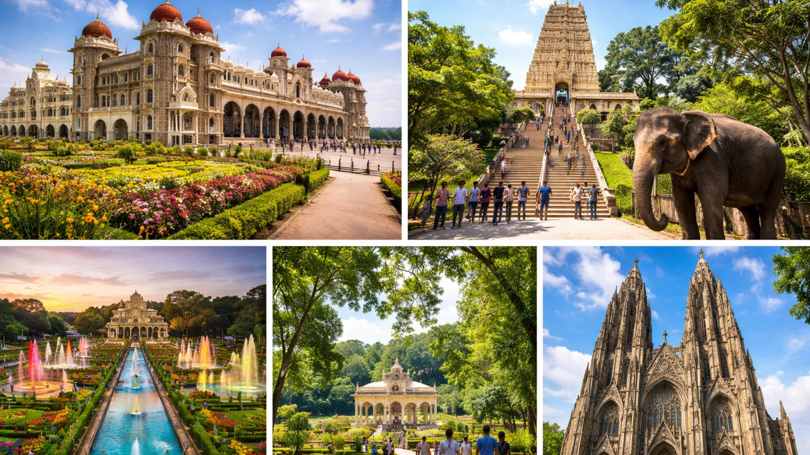

Mysore, also known as Mysuru, is one of the most beautiful and culturally rich cities in Karnataka. Known for its royal history, grand palaces, vibrant markets, and peaceful gardens, Mysore attracts thousands of visitors every year. The city offers a perfect blend of tradition, heritage, and modern tourism, making it a popular destination for travelers from across India and around the world.
Whether you are planning a short weekend getaway or a longer vacation, Mysore has many wonderful experiences waiting for you. From magnificent palaces and temples to scenic hills and colorful markets, the city has something for every traveler.
For visitors planning their trip, choosing the right accommodation is an important part of the experience. Many travelers prefer centrally located places such as Maurya Palace because they provide easy access to major attractions, transportation, and restaurants in the city.
This complete travel guide will help you explore the best attractions, food experiences, and places to stay in Mysore, making it easier for you to plan a memorable trip.
Mysore is often called the cultural capital of Karnataka because of its rich traditions and royal heritage. The city was once the capital of the Wadiyar dynasty, and many of its historical buildings and monuments reflect the grandeur of that era.
One of the things that makes Mysore unique is its calm and relaxed atmosphere. Unlike crowded metropolitan cities, Mysore offers a peaceful environment that allows visitors to explore attractions comfortably.
The city is also famous for the grand Mysore Dasara Festival, which attracts tourists from across the world. During this festival, the entire city is decorated with lights, cultural events, and royal processions.
Because of its history, culture, and natural beauty, Mysore continues to be one of the most loved travel destinations in South India.
Mysore offers many fascinating attractions that reflect its history and culture. Here are some of the must-visit places for travelers.
Mysore Palace
Mysore Palace is the most famous landmark in the city and one of the most visited attractions in India. The palace was the royal residence of the Mysore kings and is known for its beautiful Indo-Saracenic architecture.
Visitors can explore the palace halls, royal artifacts, and stunning interiors. One of the most magical experiences is the evening illumination when the palace lights up with thousands of bulbs.
Chamundi Hills
Chamundi Hills is a scenic hill located about 13 kilometers from the city. At the top of the hill is the famous Chamundeshwari Temple, dedicated to Goddess Chamundi.
The hill also offers breathtaking views of the entire city. Many travelers visit this place for both spiritual experiences and photography.
Mysore Zoo
The Mysore Zoo, officially known as Sri Chamarajendra Zoological Gardens, is one of the oldest zoos in India.
The zoo is home to many animals including lions, elephants, giraffes, zebras, and rare birds. It is a great place for families and children to enjoy nature and wildlife.
Brindavan Gardens
Brindavan Gardens is located near the Krishna Raja Sagar Dam and is famous for its beautifully designed gardens and musical fountain show.
In the evening, visitors gather to watch the colorful musical fountain display where water dances in rhythm with music and lights.
Devaraja Market
Devaraja Market is one of the most vibrant places in Mysore. The market is filled with colorful flowers, fresh fruits, spices, incense sticks, and traditional Mysore products.
Walking through this market gives visitors a real experience of local culture and everyday life in the city.
No trip to Mysore is complete without trying its delicious local food. The city is known for its unique flavors and traditional dishes.
Mysore Masala Dosa
One of the most famous dishes in Mysore is the Mysore masala dosa. It is crispy, flavorful, and served with chutney and sambar.
Mysore Pak
Mysore Pak is a traditional sweet that originated in Mysore. Made from gram flour, sugar, and ghee, it is one of the most popular sweets in Karnataka.
Filter Coffee
South Indian filter coffee is another must-try beverage. The rich aroma and strong flavor make it a favorite among locals and visitors.
Traditional Meals
Many restaurants in Mysore serve traditional South Indian meals on banana leaves, including rice, sambar, rasam, vegetables, and pickles.
Exploring the local food scene is one of the most enjoyable parts of visiting Mysore.
Choosing the right place to stay can make your trip much more convenient and enjoyable.
Central Mysore
Staying in the central part of the city makes it easy to access major attractions such as Mysore Palace, markets, and restaurants.
Nazarbad Area
This area is peaceful and located close to attractions such as Mysore Zoo and gardens.
Gokulam Area
Gokulam is known for its cultural atmosphere and is popular among international travelers and yoga enthusiasts.
Because of the city’s growing tourism, travelers can easily find accommodation that suits their budget and travel needs.
Many visitors searching for the Best Hotels in Mysore prefer staying in locations that provide easy access to the city’s attractions.
Here are some useful tips that can help make your Mysore trip smoother and more enjoyable.
Start your day early: Many attractions get crowded later in the day.
Wear comfortable shoes: You may need to walk a lot while exploring attractions.
Carry a camera: Mysore has many beautiful places perfect for photography.
Try local food: Experiencing the local cuisine is an important part of the trip.
Plan your itinerary: Group nearby attractions together to save travel time.
These simple tips can help travelers enjoy a relaxed and memorable experience.
The best time to visit Mysore is between October and March when the weather is pleasant and comfortable for sightseeing.
During this time, visitors can explore outdoor attractions without worrying about extreme heat.
The Dasara Festival, usually held in September or October, is one of the most exciting times to visit Mysore. The city becomes vibrant with decorations, cultural performances, and grand celebrations.
Most travelers can explore the major attractions in Mysore within two to three days.
The best time to visit Mysore is between October and March when the weather is pleasant.
Some popular attractions include Mysore Palace, Chamundi Hills, Mysore Zoo, Devaraja Market, and Brindavan Gardens.
Yes, Mysore is a family-friendly destination with attractions suitable for all age groups.
Mysore is famous for dishes such as Mysore masala dosa, Mysore Pak, and traditional South Indian meals.
Mysore is a city that beautifully combines history, culture, and natural beauty. From the magnificent Mysore Palace and scenic Chamundi Hills to vibrant markets and delicious local food, the city offers a complete travel experience for visitors.
Whether you are a first-time traveler or someone returning to explore more, Mysore always has something new to offer. Planning your itinerary carefully and choosing the right place to stay can make your trip even more enjoyable.
Travelers who want convenient access to the city’s attractions often prefer centrally located accommodations like Maurya Palace, as they allow visitors to explore Mysore comfortably.
For visitors looking for a convenient location and easy access to major attractions, Maurya Palace can provide a practical base while exploring the city.
Many travelers searching for the best Stay in Mysore prefer accommodations that are close to the main landmarks and cultural spots, making options like Maurya Palace a convenient choice.
With its welcoming atmosphere, beautiful attractions, and rich heritage, Mysore remains one of the most memorable destinations in South India.